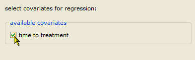
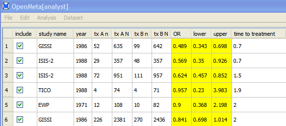
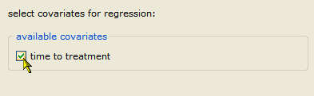

This section provides an example that illustrates how to perform a meta-regression. To try the example for yourself, open the data set meantime.oma, as described in Opening an Existing Data Set.

Next, do the following steps:
This displays a regression summary and plot shown below. Note: The regression plot is only displayed if you select exactly one continuous covariate, and no factor covariates. Otherwise, only the summary is displayed.

 | Adding a Covariate | Cumulative Meta-Analysis |  |